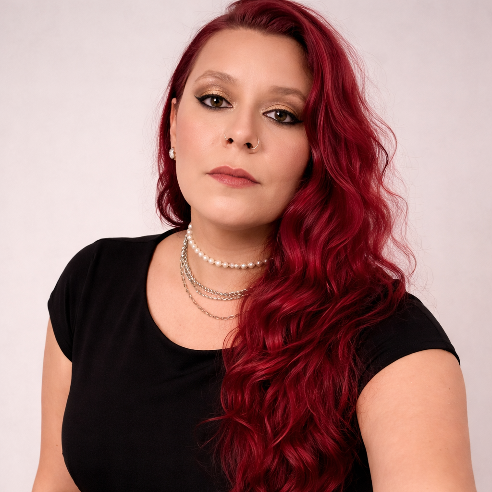
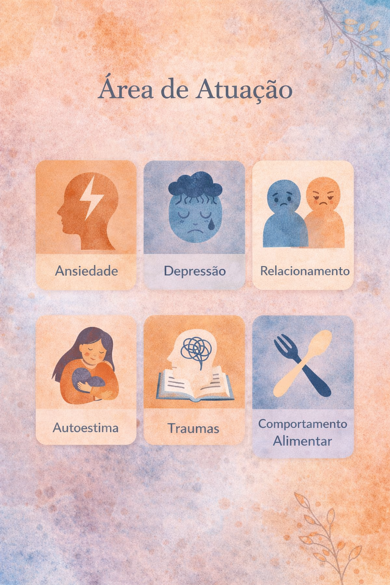
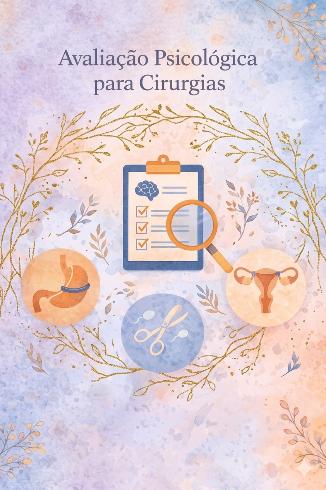

Sobre mim
Sou psicóloga formada pela Universidade Paulista, com trajetória construída a partir do interesse profundo pelo funcionamento emocional e pelas histórias que cada pessoa carrega.
Minha prática é orientada pela abordagem psicodinâmica, buscando compreender os sentidos mais profundos dos sentimentos e comportamentos.
Acredito que a psicoterapia é um espaço de construção — um lugar seguro onde você pode se escutar e encontrar novas formas de lidar com aquilo que te atravessa.

Minhas formações
Graduada em Gestão de Recursos Humanos pela Universidade Bandeirantes em 2012.
Graduada em Psicologia pela Universidade Paulista desde 2019.
Pós Graduação em Avaliação Psicológica e Psicodiagnóstico pela faculdade Famart.
Pós Graduação em Neuropsicologia com ênfase em reabilitação cognitiva pela faculdade Famart.
Áreas de Atuação
- Ansiedade e Pânico
- Depressão
- Dependência Emocional
- Autoestima
- Traumas e Luto
- TDAH Adulto

Detalhes dos ServiçosAvaliações Psicológicas
Realizo avaliações cuidadosas para processos de cirurgia bariátrica e vasectomia/laqueadura, garantindo uma escuta ética e suporte emocional.

Como funciona?